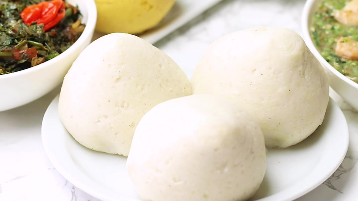

Tasty Ugali Recipe

Ugali
This Ugali Recipe is a type of cornmeal porridge made in Africa. It is also known as ngima, obusuma, kimnyet, nshima, Mieliepap, phutu, sadza, Kwon, and other names, and is sometimes mixed with cassava flour.
Ingridients
- 4 Cups Water or a bit more if you need it.
- 2 Cups Fine cornmeal/flour
- 1 Tsp Salt
Steps
- Add about 4 cups of water to a large saucepan. Add ½ teaspoons of salt. Bring to a boil, remove about a cup and set aside.
- Begin gradually whisk in the cornmeal, a little bit at a time and keep stirring with a wooden spoon to prevent any lumps. You may have to remove the saucepan from heat while trying to get rid of lumps- to prevent burns. Reduce the heat to low and cook until the mixture thickens.
- Then add the remaining boiled water, reduce heat to the lowest. Cover, and cook for about 15. You can add some more water if desired a softer texture. Turn off the heat.